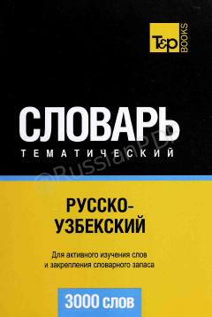

РTRus va o'zbek tillari uchun 3000 ta eng kerakli so'zni o'z ichiga olgan tematik lug'at.
Ushbu lug'at rus va o'zbek tillarini o'rganuvchilar uchun mo'ljallangan bo'lib, eng ko'p ishlatiladigan 3000 ta mavzuli so'zni o'z ichiga oladi. Kitob kundalik muloqot va so'z boyligini oshirish uchun qulay tematik bo'limlarga bo'lingan.